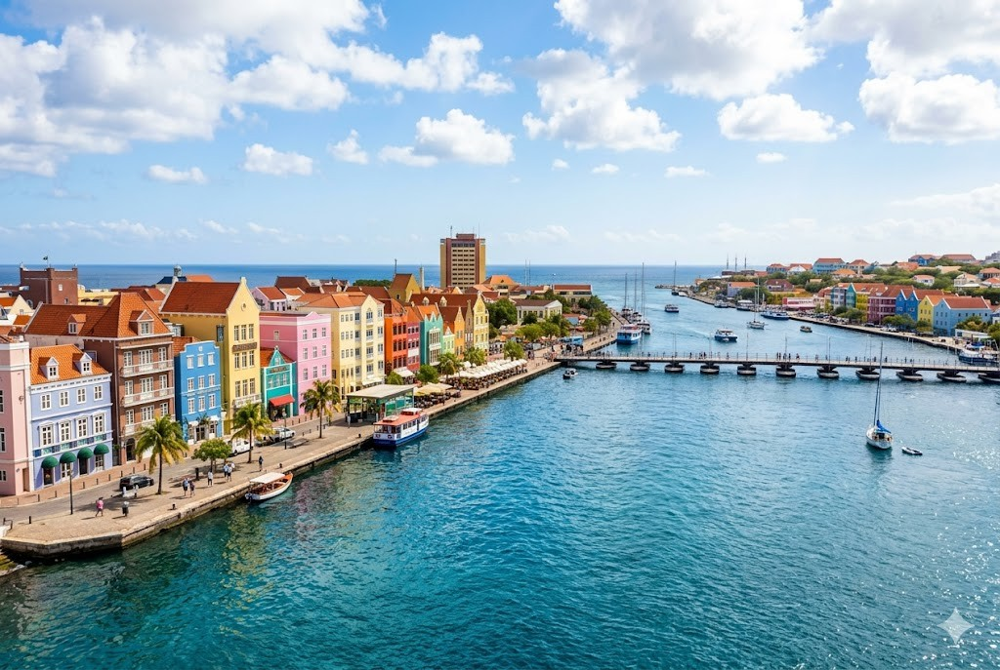
Hier stehen die wichtigsten Daten zu deinem Land. In der App baust du daraus deinen eigenen Steckbrief.
| Hauptstadt | Willemstad |
| Kontinent | Nordamerika (Karibik) |
| Sprache | Papiamentu und Niederländisch |
| Währung | Gulden |
| Einwohner | etwa 150.000 Menschen |
| Fläche | rund 444 km² (eine kleine Insel) |
| Großer Berg | Christoffelberg, rund 372 m |
| Nachbarländer | eine Insel im Meer, nahe bei Aruba, Bonaire und Venezuela |
In Curaçao gibt es viele berühmte Orte. Diese vier solltest du kennen.
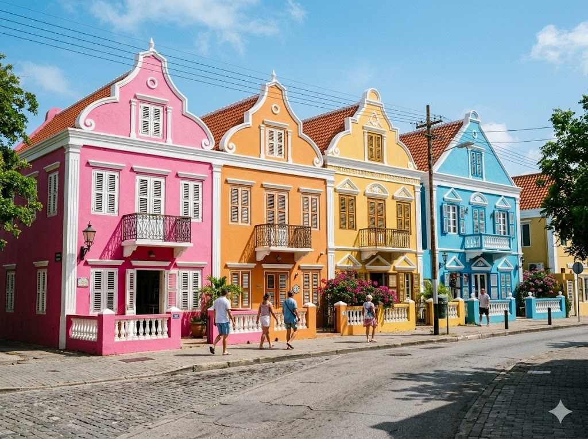
Die bunten Häuser von WillemstadWillemstad ist die Hauptstadt von Curaçao. Berühmt sind die bunten Häuser am Wasser. Sie sind rosa, gelb, blau und grün angemalt. Früher haben die Niederländer die Stadt gebaut. Die Häuser gehören heute zum Welterbe.
Grüne Wörter für die AppWillemstadbunten Häuseram WasserNiederländerWelterbe
Die Königin-Emma-BrückeDie Königin-Emma-Brücke ist eine besondere Brücke. Sie schwimmt auf vielen kleinen Booten im Wasser. Darum nennt man sie auch die schwimmende Brücke. Wenn ein Schiff kommt, schwenkt die Brücke zur Seite. Dann können die Menschen kurz nicht hinüber.
Grüne Wörter für die AppKönigin-Emma-Brückeschwimmtkleinen Bootenschwimmende BrückeSchiff
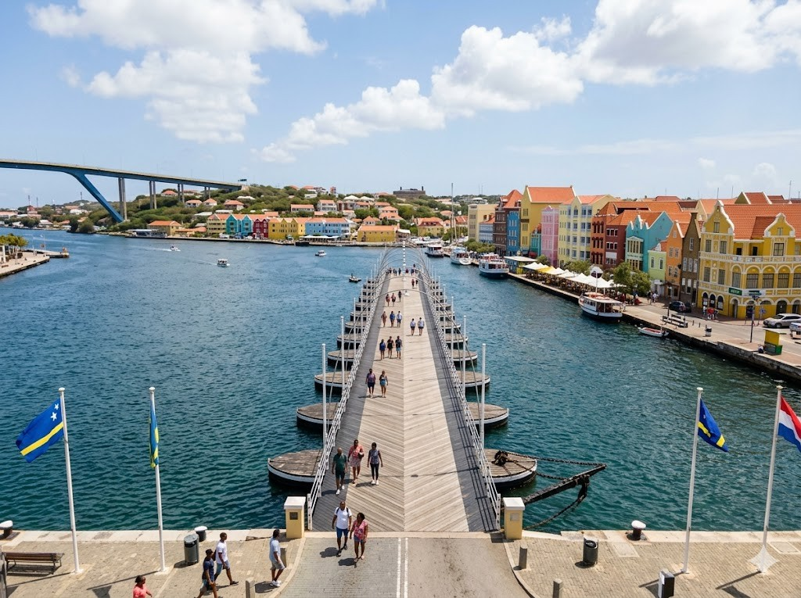
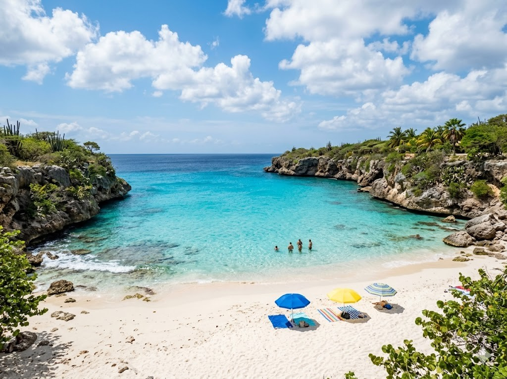
Die SträndeCuraçao hat viele schöne Strände. Das Wasser ist türkisblau und ganz klar. Zwischen den Stränden stehen weiße Felsen. Im Meer kann man bunte Fische sehen. Viele Urlauber kommen zum Schwimmen und Tauchen.
Grüne Wörter für die AppSträndetürkisblauweiße Felsenbunte FischeTauchen
Der Christoffel-NationalparkIm Norden der Insel liegt ein großer Nationalpark. In der Mitte steht der Christoffelberg. Er ist der höchste Berg von Curaçao. Überall wachsen hohe Kakteen. Wer hinaufsteigt, hat einen weiten Blick über die Insel.
Grüne Wörter für die AppNationalparkChristoffelberghöchste BergKakteenBlick über die Insel
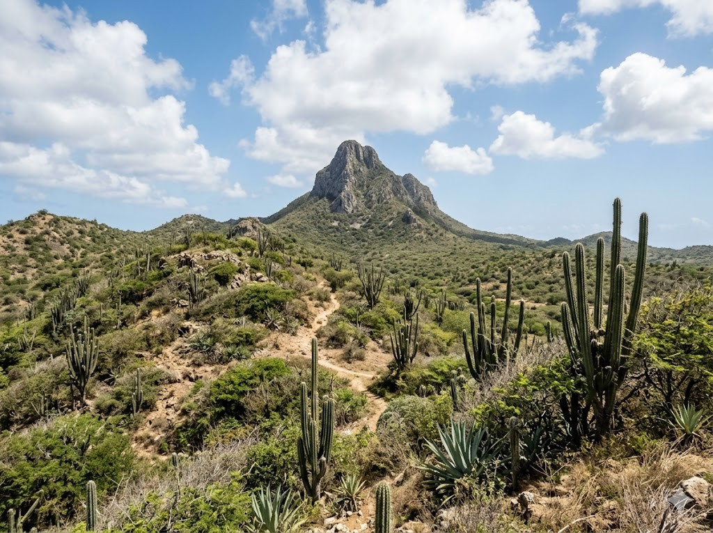
Diese Tiere leben in Curaçao und sind ganz besonders.
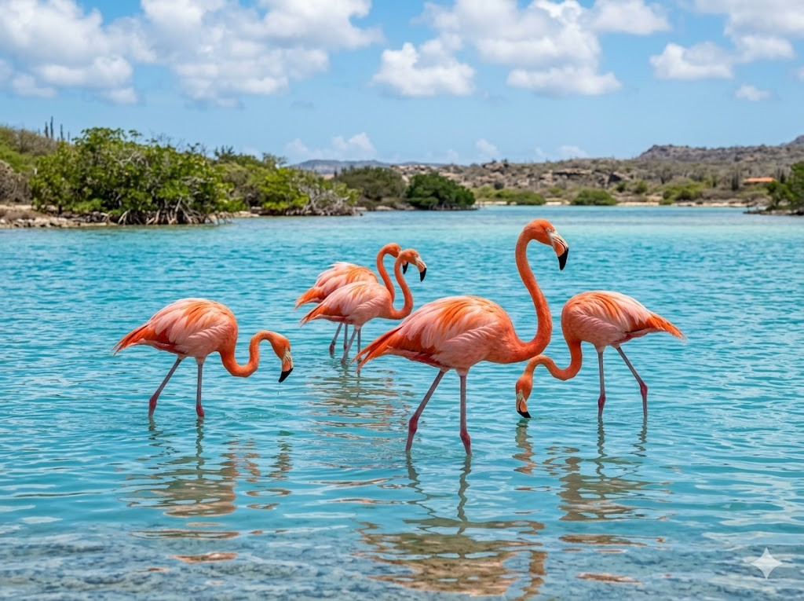
Der FlamingoAuf Curaçao leben rosa Flamingos. Sie stehen oft in flachem Wasser. Mit dem Schnabel suchen sie nach kleinen Tieren. Von dieser Nahrung werden ihre Federn rosa. Flamingos schlafen manchmal auf einem Bein.
Grüne Wörter für die AppFlamingosrosaflachem WasserSchnabelauf einem Bein
Der LeguanDer grüne Leguan ist eine große Echse. Er liegt gern in der Sonne auf warmen Steinen. Mit seinen Krallen klettert er gut auf Bäume. Leguane fressen vor allem Blätter und Früchte. Vor Menschen haben sie meist keine Angst.
Grüne Wörter für die AppLeguangroße Echsein der SonneklettertBlätter und Früchte
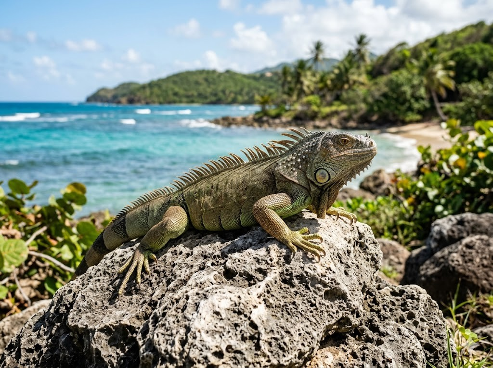
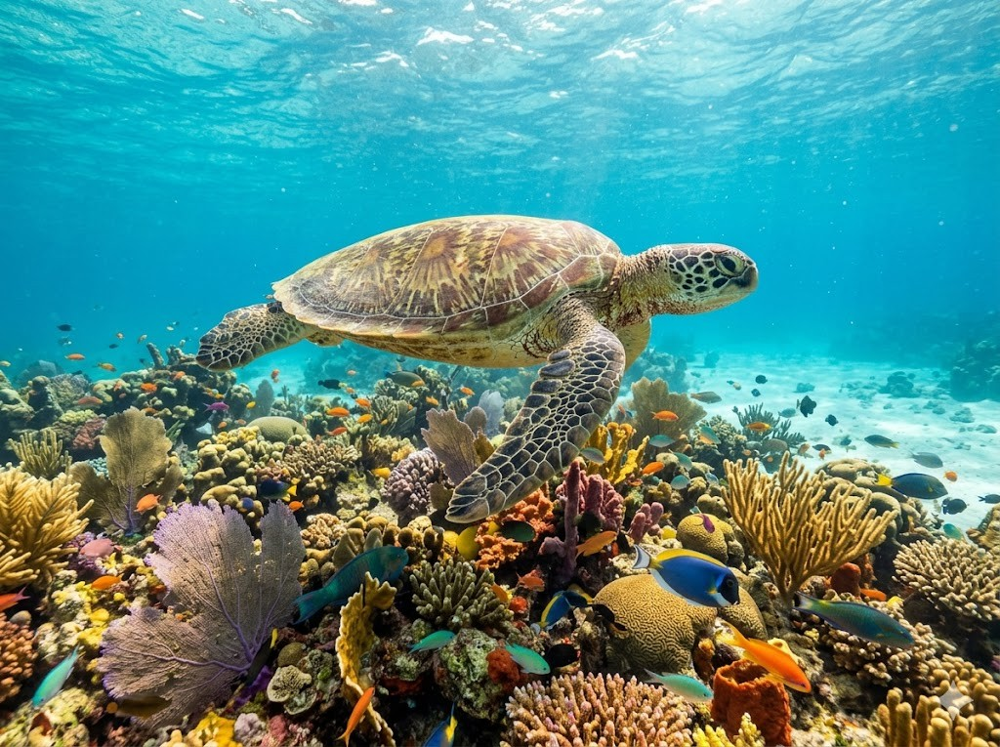
Die MeeresschildkröteIm Meer rund um Curaçao schwimmen Meeresschildkröten. Sie gleiten ruhig durch das klare Wasser. Mit ihren Flossen rudern sie vorwärts. An den Stränden legen sie ihre Eier in den Sand. Aus den Eiern schlüpfen kleine Schildkröten.
Grüne Wörter für die AppMeeresschildkrötenklare WasserFlossenEier in den Sandschlüpfen
In der App kannst du beim Essen das Foto nehmen oder dein Gericht selbst malen.
PastechiPastechi sind kleine gefüllte Teigtaschen. Sie werden in heißem Fett goldbraun gebacken. Innen sind sie oft mit Käse gefüllt. Manche schmecken auch nach Fleisch oder Fisch. Kinder essen Pastechi gern zum Frühstück.
Grüne Wörter für die AppPastechiTeigtaschengoldbraunKäsezum Frühstück
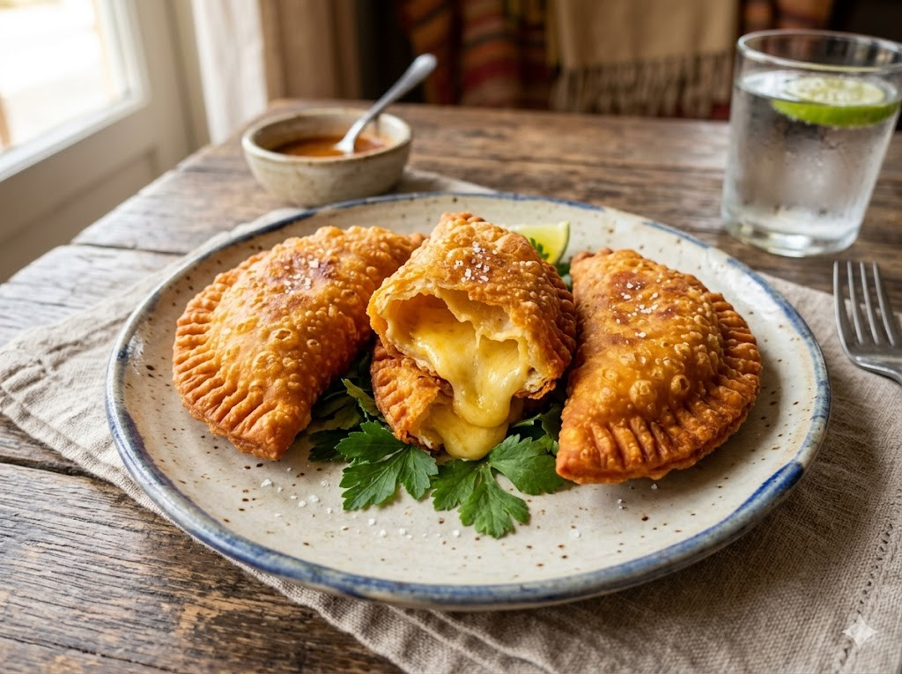
Keshi YenaKeshi Yena ist ein altes Gericht von der Insel. Eine große Kugel aus Käse wird ausgehöhlt. In die Mitte kommt würziges Fleisch. Dann wird alles im Ofen gebacken. Der Name bedeutet gefüllter Käse.
Grüne Wörter für die AppKeshi YenaKugel aus KäseFleischim Ofen gebackengefüllter Käse
Frischer FischRund um Curaçao gibt es viel Fisch. Die Fischer fangen ihn früh am Morgen im Meer. Frisch wird er dann auf dem Markt verkauft. Oft isst man den Fisch mit Reis. Dazu schmeckt eine Scheibe Limette.
Grüne Wörter für die AppFischFischerauf dem MarktReisLimette
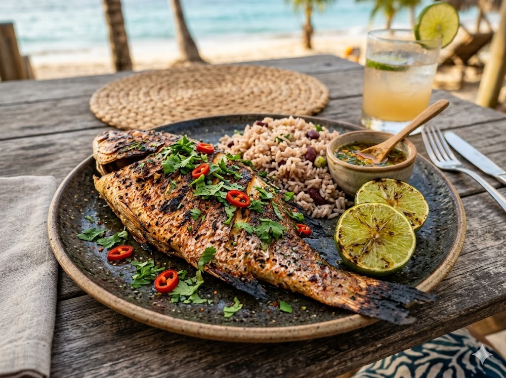
Die Nationalmannschaft von Curaçao heißt die Blaue Welle. Zum ersten Mal hat sich Curaçao für die WM 2026 qualifiziert. Es ist das kleinste Land, das je bei einer WM dabei ist. Der bekannteste Spieler ist Tahith Chong. Er spielt in England bei Sheffield United.
Grüne Wörter für die Appdie Blaue WelleWM 2026das kleinste LandTahith ChongSheffield United
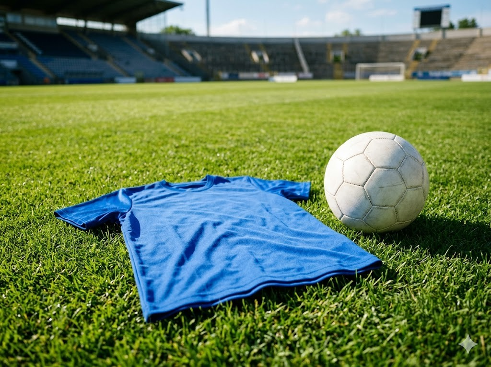
Sprachen und SchuleDie Kinder auf Curaçao sprechen meist Papiamentu. Das ist die Sprache der Insel. In der Schule lernen sie auch Niederländisch. Viele können außerdem ein bisschen Englisch. So sprechen viele Kinder gleich mehrere Sprachen.
Grüne Wörter für die AppPapiamentuSprache der InselSchuleNiederländischmehrere Sprachen
Leben am MeerDas Meer gehört für die Kinder zum Alltag. Nach der Schule gehen viele zum Schwimmen. Manche schnorcheln und schauen sich die Fische an. Andere spielen am Strand Fußball. Am Abend wird es früh dunkel und warm.
Grüne Wörter für die AppMeerSchwimmenschnorchelnam Strand Fußballwarm
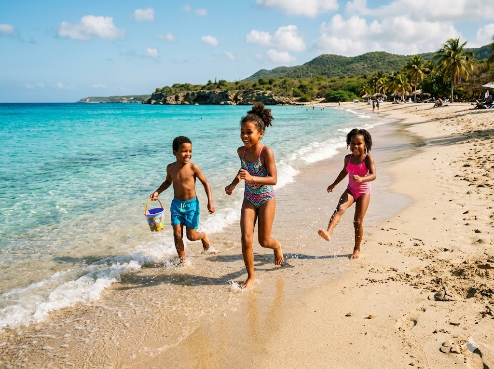